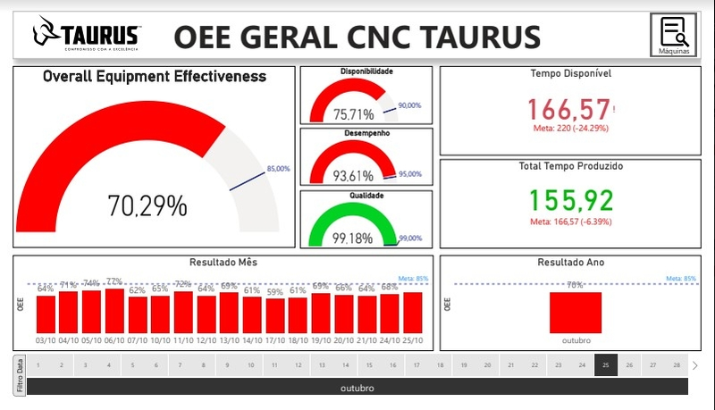
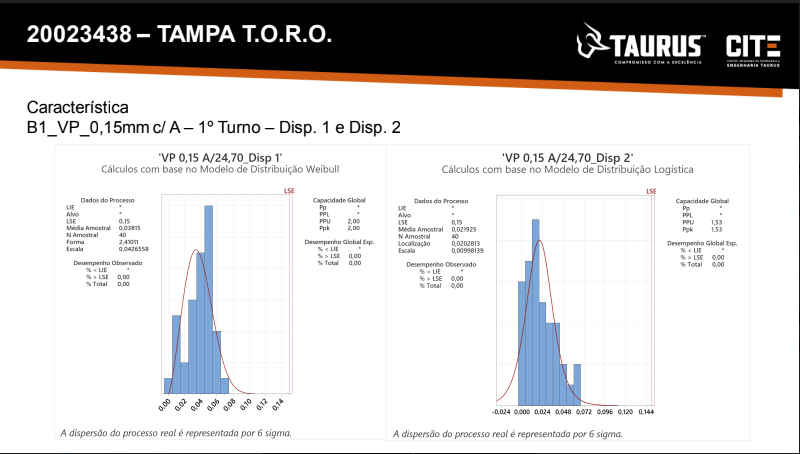

Projects

Power BI SAP Reports and Data-gathering
Developed systematic data process for decision making resolutions and project's sucess validation. Created new KPI on Overall Equipment Effectiveness (OEE) and prodution perfomance on different sectors at Taurus/Brazil.
View Project - N.A.

DMAIC and Capability Projects
Made DMAIC projects using problem solving tools, data analytics and improvement proposal. Used capability charts, quality and production reports for changes/improvements approvals.
View Project N.A..jpg)